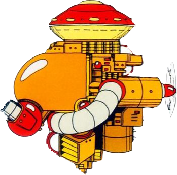

This is the main walkthrough section of the website. You can play through the levels in the order suggested in the table of contents below; there will be buttons at the bottom of each section to take you to the next and previous parts. Alternatively, you can click on one of the levels in the table if you need help with a specific level.
Table of Contents
K) Wily's Fortress 4
Reaching The Boss
Time for the final level. You'll be climbing up a tall tower with lots of spikes, and you'll want to conserve what remains of your weapons' energy bars, as you're going to be refighting the rest of the robot masters as you did with Cut Man and Elec Man on Wily's Fortress 2. Though don't worry too much about conserving weapons as there is a very nice item in this level that helps with that.
To begin with, annoying Watchers will descend from the top-left and ascend from the bottom-right, so quickly shoot them before they zap you with electricity. When they're cleared out, jump up the small block platforms to get over to the left ladder. Climb up the ladder to another screen with more Watchers; luckily they're only on one side so keep shooting right as you ascend and you'll be fine. Take the ladder up another screen. You'll see a stack of three blocks. You could use the Super Arm to get rid of them, but instead use the Magnet Beam to get over them and bag yourself a large weapon refill on the way (use it on the weapon that's currently lowest).
Continue right after the blocks and you'll reach what appears to be... a Guts Man shrine? There's a corridor with lots of pictures of him plastered on the ceiling. Apparently, he's Dr Wily's favourite robot... or perhaps his best friend. The path is uneven with lots of small indents in the ground, making it very hard to avoid the shots from the many blue Screwdrivers on the ceiling. If you have a lot of Thunder Beam to spare, use that to kill at least some of them. Personally I hate this part and I can never avoid the shots here, it's one of my least favourite things in the game. There are safe spots to stand though so try and watch where you can stay without being hit. To finish this section, there'll be one on the ceiling and one right under it on the ground, so try to get between them without being hit.
At the end of that annoying corridor, you'll have to climb up two small ladders to reach a ledge at the top right. Jump off it to the single floating block below, and you'll see a moving pink platform like the ones from the start of Guts Man's stage. This one moves even faster than those and there is a very cruel drop along the way that you'l need to jump over. Time it perfectly so you jump off just before the platform points down and you land on the floating block (you can of course use the Magnet Beam for this whole section; in fact, I'd recommend it since we don't need to worry about conserving it for anything anymore). Get to the other side of the drop by jumping back to the pink platform at the right time, and instead of taking the small ladder, keep going right to get a 1-up and, next to it, an item called a Yashichi. There is only one of these items in the whole game and it fully refills all of your health and every weapon's energy!! Incredibly helpful so make sure you don't miss this, as it is optional.
Now take the small ladder to the left that you skipped over a moment ago, equip Fire Storm, then head into the gold teleporter up here to fight some old foes.
Rematch: Four Robot Masters
You'll be refighting the four robot masters in the order shown in the list below. I considered giving each of these battles its own section but I feel there's no need since the fights are exactly the same as before. The main difference now is that you have the Hyper Bomb to use against Guts Man which can kill him in three hits. Bomb Man is first which is why I mentioned that you should equip the Fire Storm before heading in the first teleporter. After each fight, you'll need to head back into the teleporter and it will take you to the next battle. The good thing here is that hopefully you just picked up the Yashichi item so your weapon bars should all be full. Just so you don't have to check other parts of the guide again, I'll list the robots' weaknesses below in case you forgot.
- Bomb Man is weak to the Fire Storm (F).
- Fire Man is weak to the Ice Slasher (I).
- Ice Man is weak to the Thunder Beam (E).
- Guts Man is weak to the Hyper Bomb (B).
After that boss gauntlet is over, the teleporter will take you to one more long corridor with a single large weapon refill at the end. If for any reason your Super Cutter isn't maxed out, use it for that, but otherwise it doesn't really matter what you use it for. Equip the Fire Storm and head in to fight the final boss...
Boss Fight: Wily Machine
Phase 1
It's finally time to face Dr Wily himself in his dangerous invention, the Wily Machine (sometimes called the Wily Machine 1 due to its many successors in future games). This fight has two phases, but the way you attack is pretty much the same in each one, and all that changes is the attacks you have to dodge. In this first phase, the large machine will move back and forth, firing small spheres from its purple laser near the front. The balls fly out and fall down quickly in an arc instead of moving straight forward through the air, so make sure you keep moving in order to dodge these.
In order to damage the machine, all you need to do is fire at the purple gun. The gun is weak to the Fire Storm and will go down very quickly if you fire at it while also jumping next to it to touch it with your fire shield. If you need to use another weapon I would recommend the Thunder Beam or the Rolling Cutter, but it'll take quite a bit longer without the fire, and you'll want to keep moving left and right to avoid the spheres as when they're shot out they'll be aiming for where you are in parallel to the ground.
Phase 2
Once you've completed the extremely short first phase (if you use the Fire Storm), the window at the front of the machine will break open and you'll now be able to see Wily inside the machine. Now there'll be larger spheres shooting out from the machine but thankfully it no longer shoots out the smaller ones from before; it'd be very unfair if you had to avoid both while focusing on shooting. These large spheres will travel towards you in a loop-de-loop and I think they're much harder to dodge than the smaller ones due to their unconventional movement.
The machine is no longer weak to Fire Storm. In fact, it isn't weak to any weapon now; they'll all deal the same damage to it. Despite this, you should use the Rolling Cutter because it can deal up to three hits in one throw, making it a lot more effective than other weapons. You'll want to dodge the beam shots by running right of them then heading back left to jump and throw the Cutter. Repeat this for a while and you should be fine. If you run out of Cutter energy, try using the Thunder Beam or the Fire Storm as they can also hit more than once in a single shot if you're lucky.
The second phase will definitely take longer than the first phase no matter what weapon you use but stay determined and everything will work out. You've come too far to give up now!
Ending and Credits
Once the Wily Machine is destroyed, Dr Wily will jump out of it and land at Mega Man's feet, grovelling on the ground and begging for mercy. Congratulations! You've just beaten Mega Man 1!
You'll get a ton of clear points for beating the final level if you care about that kind of thing. Being a game released in the 80s, the ending is short, sweet and simple. You'll see some credits against a pretty pixel art background of some mountains and trees. You'll also get the following message:
- "Megaman has ended the evil domination of Dr. Wily and restored the world to peace.
- However, the never ending battle continues until all destructive forces are defeated.
- Fight, Megaman! For everlasting peace!"
The music that plays during that message is actually remixed into an iconic fan favourite theme that plays during the opening scene of Mega Man 2.
After that, Mega Man will drop down from above and start running to the left as various staff members' names appear in the black space below, and a different song will play. The background will soon change into a beautiful sunset with a deep pink sky, and Mega Man's battle armour will come off to reveal what he looks like underneath. This boy is Rock, Dr Light's courageous assistant who initially volunteered to be transformed into a fighting robot. ...His hair reminds me of Elvis Presley. Finally, as the sun completely vanishes from view and the blanket of nightfall covers the backdrop, Rock will reach a metropolitan city with many skyscrapers where he meets his beloved creator, Light, and his robotic 'sister', Roll! Roll is the second humanoid robot created by Light, whilst Rock/Mega Man is the first. Rock will excitedly jump into the air and that's that for this adventure. If you press the start button, you can return the level select where you can replay any of the levels, including the Wily stages.
With that finished, thank you very much for using this walkthrough. I do hope you enjoyed this game as much as I do, and if you did, I would highly recommend playing Mega Man 2, which is also for Mega Man 2 and will most likely be packaged with this game if you played this on one of the many collections. The sequel to this game is widely regarded as one of the best Mega Man games and one of the best games for NES, and I would certainly say it's my favourite. It features 8 robot masters instead of 6, which would become the standard for the rest of the series, and has a fantastic 8-bit soundtrack.
You might enjoy replaying this game and competing against friends to see who can get the highest score, which makes at least some use of the points system. It is a very short game after all.